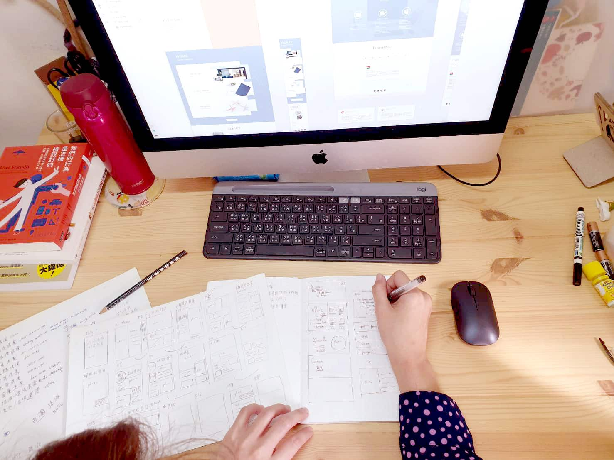

把你的想法，落實在生活裡。

Services
從品牌建立到日常經營，陪你一步一步完成
Testimonials

Mia Bakery 米亞烘焙
品牌官網設計原本以為做網站很複雜，但 Laya 從頭到尾都說明得很清楚。網站上線後，詢問度明顯提升，客人說第一眼就覺得很有質感。

陳設計工作室
品牌起步我只給了幾個關鍵字和參考圖，Laya 就精準抓到了我要的感覺，交出來的 Logo 第一版就幾乎確定了，修改很少。

Bloom 花藝工作室
品牌 LINE 建置以前 LINE 帳號很陽春，客人都不知道要按哪裡。設定完新的圖文選單後，預約訊息整整多了一倍，非常驚喜。